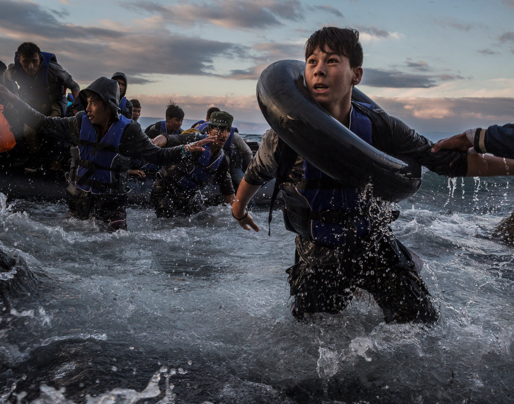
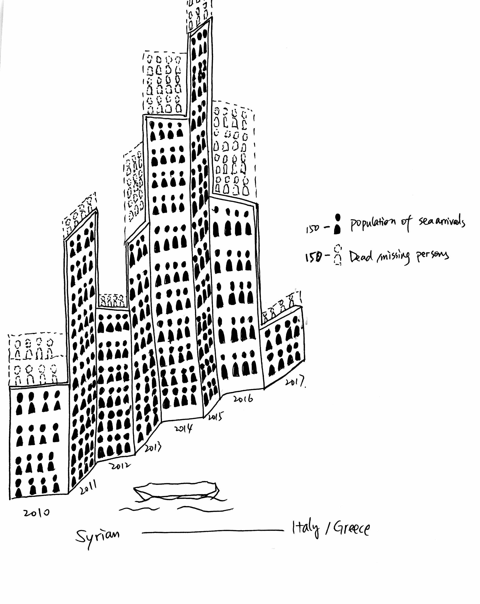
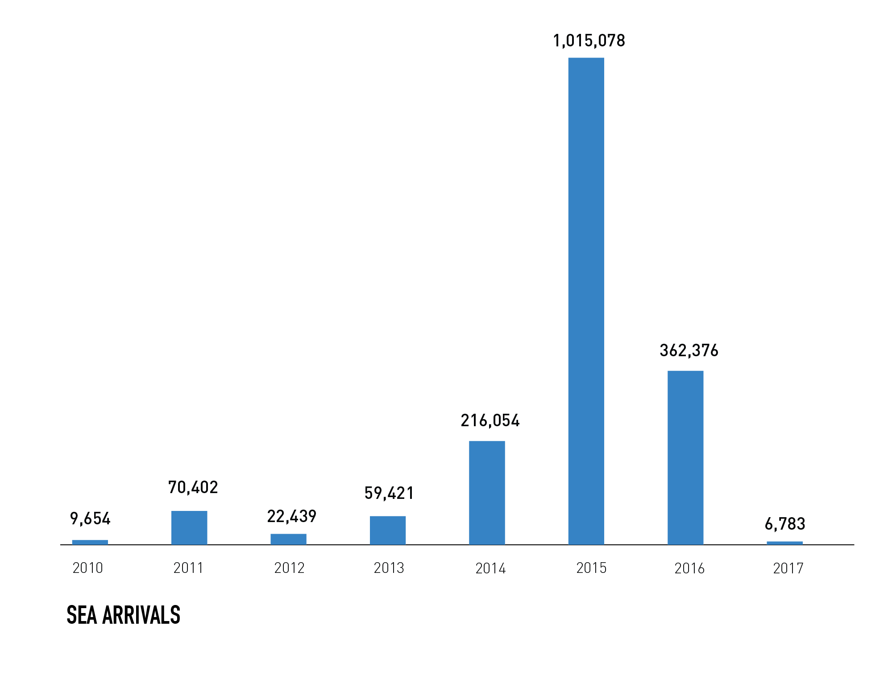
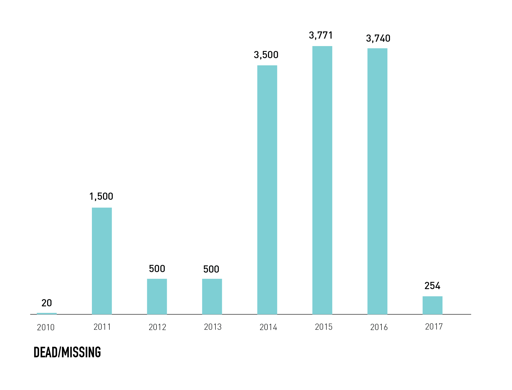

This graph shows refugees who travelled by the Mediterranean Sea from Syria to other countries such as in Europe. This compares how many refugees made it alive travelling by sea and how many refugees were dead or missing from 2010 to 2017. This data was received from the UNHCR.


